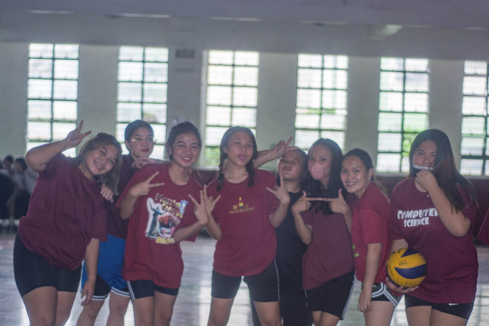
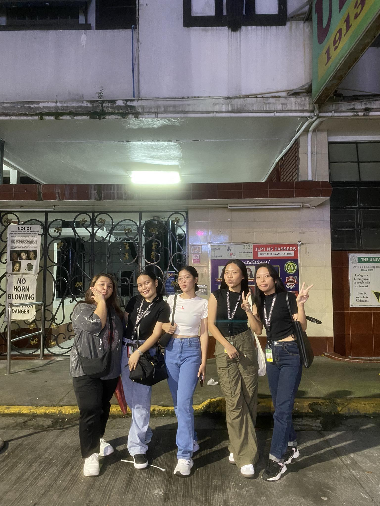
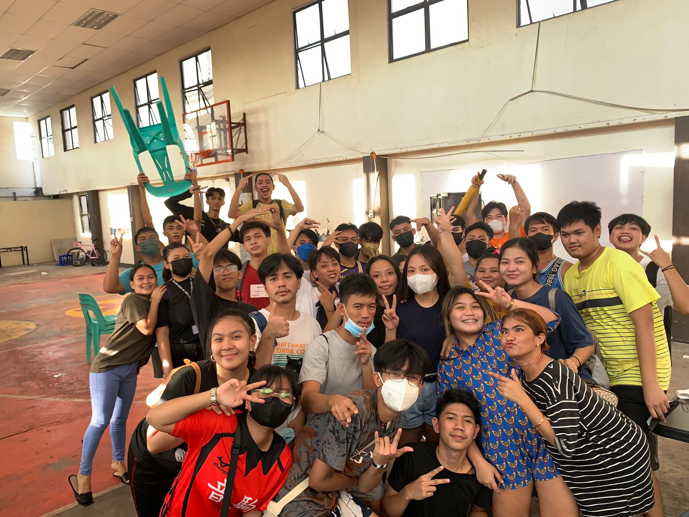
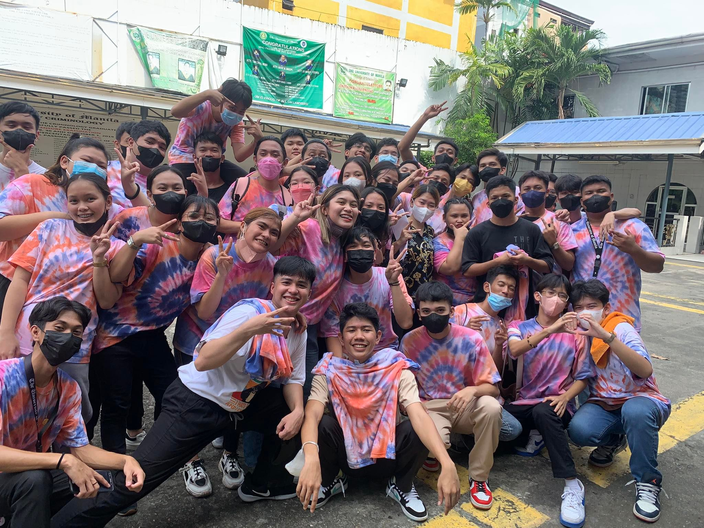

A true friend is someone who sees the pain in your eyes while everyone else believes the smile on your face. They are the ones who stand by you when the rest of the world walks away, offering support, understanding, and unconditional love. In their presence, you find solace, strength, and a deep sense of belonging.
My Friends

Friendship is not about whom you have known the longest; it’s about who came and never left your side. It is about the people who stick around through life’s highs and lows, who offer a listening ear and a comforting presence, and who understand you in ways that words often cannot express.

The greatest gift of life is friendship, and I have received it.

The most beautiful discovery true friends make is that they can grow separately without growing apart. Genuine friendship is not bound by physical proximity but by emotional connection. It thrives on trust, respect, and a deep understanding that withstands the test of time and distance.

Friendship is born at that moment when one person says to another, ‘What! You too? I thought I was the only one.
The greatest gift of life is friendship, and I have received it.